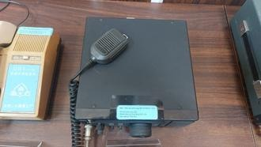

Nhận dạng & niên đại
Công dụng
Công dụng chung
Máy thu phát HF đa chế độ, dùng liên lạc xa ở dải sóng ngắn.
Trong thông tin tín hiệu đường sắt
Theo nhãn hiện vật: dùng trong các hoạt động khẩn cấp. Về kỹ thuật, có thể làm kênh dự phòng khi cáp/tổng đài gặp sự cố hoặc khi cần thiết lập liên lạc độc lập.
Phạm vi làm việc
Thiết kế gọn, dễ vận hành, phù hợp cả trạm cố định và cấu hình cơ động nếu có nguồn DC/anten thích hợp.
Cấu tạo bên trong

RF front-end, mixer/IF, PLL synthesizer, bộ lọc và detector, audio, CPU/memory, mạch điều chế, driver và PA RF, bộ điều khiển mặt trước và microphone HM-36.
Cách thức hoạt động

Giống nhóm HF hiện đại: thu bằng đổi tần superheterodyne; phát bằng tạo sóng/điều chế theo mode rồi khuếch đại công suất. PLL giữ tần số ổn định và CPU quản lý VFO/bộ nhớ.
Thông số kỹ thuật
Thông số chính
Thu khoảng 0,5–30 MHz; phát trên các băng HF theo quy định thị trường; SSB/CW/AM và FM nếu lắp option UI-9; tổng số kênh nhớ/biên quét khoảng 32; công suất phát tối đa khoảng 100 W ở SSB/CW; nguồn 13,8 VDC, cáp nguồn dùng cầu chì 20 A.
Nguồn điện / cấp nguồn
13,8 VDC; cần nguồn dòng lớn khoảng 20 A khi phát công suất cao.
Giá trị lịch sử – trưng bày
Phản ánh giai đoạn Công ty sử dụng thiết bị vô tuyến thương mại chuyên nghiệp/amateur-grade mạnh và linh hoạt làm phương tiện dự phòng.
Tình trạng quan sát
Máy và microphone còn hiện diện; mặt hiển thị có dấu lão hóa. Nhãn của Công ty nhận dạng model IC-725A.
Ảnh hiện vật

Xác minh thêm & nguồn tham khảo
Căn cứ mốc sử dụng tại Việt Nam/ĐSVN:
Cao
về công dụng theo nhãn trưng bày hiện tại; mốc thời gian vẫn là
ước tính.